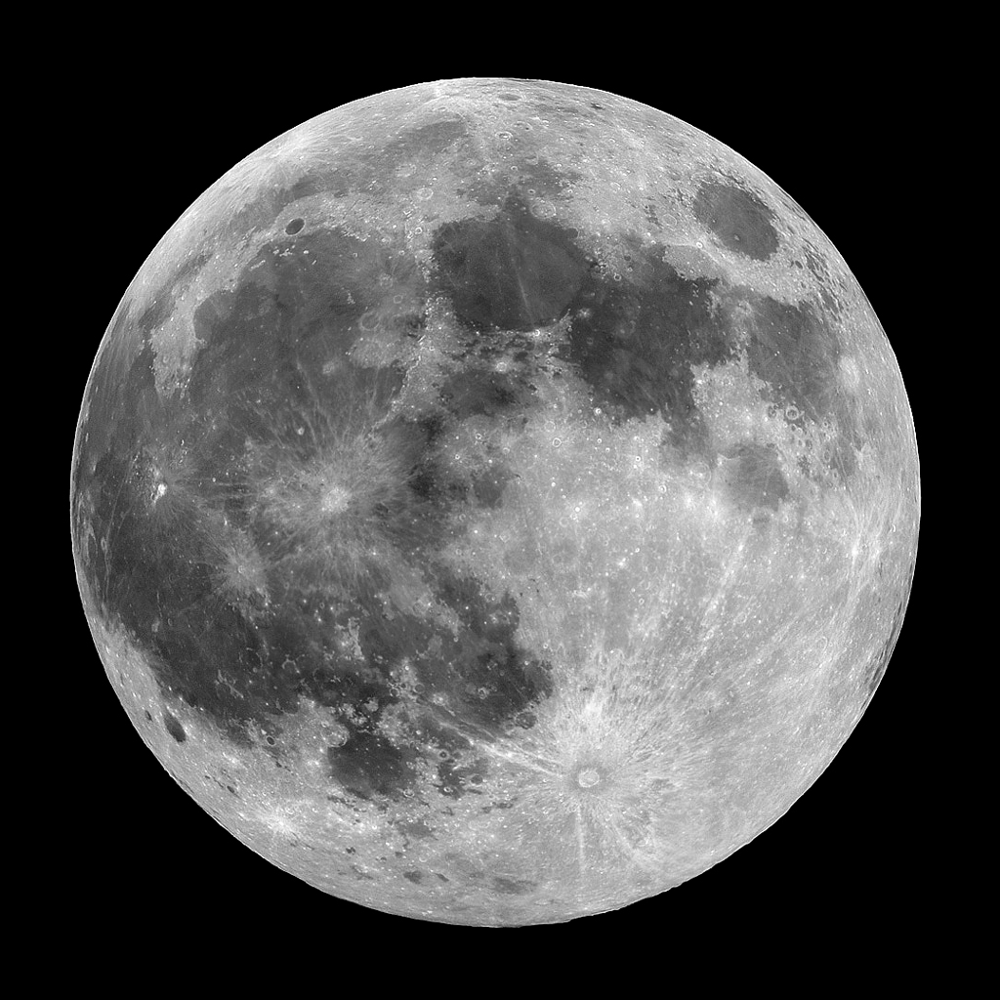

Tytuł
Spam – wiadomość zawierająca codzienną aktualizację reklamy, wirusów bądź trojanów. Spam, w przeciwieństwie do ważnej poczty w jeszcze ważniejsze sprawie, idzie błyskawicznie; gdyby Poczta Polska dostarczała spam, byłby on w grupie nielicznych przypadków, w których Poczta z Trąbką działałaby punktualnie. Zresztą Poczta Polska dostarcza czasami spam, ale są to tylko marne ulotki, najczęściej reklamujące Fundusze Ubezpieczeniowe, pizzę albo inne badziewie. Spam z serem Amerykański spam z serem ma wydłużony termin przydatności do spożycia Thisisspam Król Leonidas pozbywający się spamu Spampobyku W naszym sklepie z viagrą jest największy wybór Najpopularniejsza forma rozsyłania spamu to e-mail. Spam jest bardzo lubiany ze względu na wysokie wygrane, dochodzące do wielu milionów dolarów. Wiele osób korzysta również z promocji na zakup Cenzura2 lub Photoshopa. W większości przypadków, usuwanie wiadomości spamowych, może pochłonąć nawet do 90% czasu życia danego użytkownika. Według osób dotkniętych emailowstrętem, z pomocą spamu można otrzymać też spyware, który otwiera nasz komputer na cały świat i dopisuje do nieformalnej listy wolnych zasobów internetowych (tzw. botnet) albo przestawia układ klawiatury QWERTY na dowolny inny; posiada też możliwość dynamicznej zmiany układu klawiatury, kiedy już – pogodzeni z tym nieszczęściem – za pomocą markera opiszemy klawiaturę od nowa. Przykłady spamu Errors Spam errorboxów. [edytuj] InFoRmAcJa Od BoGaTeGo KuMpLa